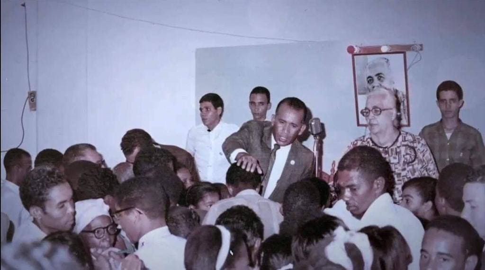
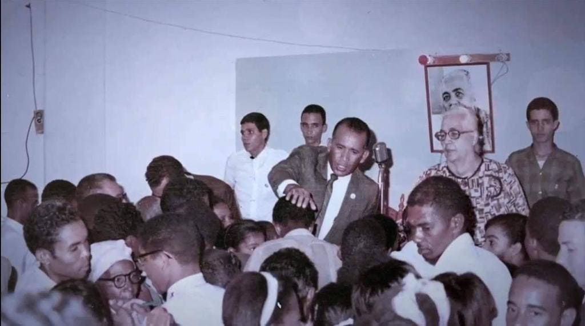

Un dominicano de nombre Melchor conoció la Obra de Mita a principio de los años 60 en Puerto Rico. Este le solicita a la Persona de Mita que envíe predicadores a tierras quisqueyanas. Es así como en el mes de abril de 1963, la Persona de Mita envía al evangelista Aurelio Morales (Miqueas) a que establezca la Congregación en República Dominicana. El primer servicio fue en el sector de Villa Agrícolas en Santo Domingo. Luego, Miqueas se traslada a la ciudad de Santiago de los Caballeros donde a través de Mireya Minier, quien también había conocido la Obra en Puerto Rico, se celebra un servicio. En Santiago de los Caballeros fue donde se levantó la primera congregación en tierras quisqueyanas. La Persona de Mita llega por primera vez el 21 de noviembre de 1963 y celebró un servicio en la ciudad de Santiago.
Para 1965 estalla una guerra civil y Miqueas tuvo que regresar a Puerto Rico. En 1967, una vez normalizada la situación, Miqueas regresa a Santo Domingo donde, a través de los hermanos dominicanos Ernestina Castro y Sixto Castro, quienes habían conocido la Obra en Puerto Rico, se establece una congregación en la capital. El 8 de septiembre de 1967 se realiza un servicio en la capital, marcando el regreso del mensaje de Mita a aquellas tierras. El 20 de marzo de 1968, regresa la Persona de Mita a Santo Domingo y allí celebra varios servicios en donde centenares de almas se unen a la Obra.
 

La Iglesia seguía creciendo y ya tenía congregaciones en algunos barrios de la ciudad de Santo Domingo, en Santiago y en Azua de Compostela. En 1970 es cuando inicia la expansión arrolladora de la Congregación por todo el país. El 10 de agosto de 1970, Aarón llega a República Dominicana. Se extiende la Obra por Boca de Mao, Maizal, Laguna Salada, Valverde, Bonao, San Francisco, Moca, Cotuí, Villa Vásquez, Puerto Plata, San Juan, Villarpando, San Cristóbal, San Pedro, Hato Mayor, entre otros. Además de extender ampliamente a los barrios más populosos de Santo Domingo y Santiago. El 15 de julio de 1973 se inaugura el primer templo de la República Dominicana en la calle María Montez, número 343. El 15 de julio de 1979 se inaugura el templo de la Congregación Mita en Santiago de los Caballeros, convirtiéndose en la sede de la zona norte del país.
En los años sucesivos, la Obra de Mita continuó creciendo y Aarón vio la necesidad de construir un nuevo templo en la capital dominicana. Este soñado proyecto dio inicio en junio del año 2000 y se inauguró el 21 de junio de 2003. Este nuevo templo tiene capacidad para 3,500 personas sentadas. Actualmente, existen más de 120 congregaciones en toda la República Dominicana, 30 templos y unas 8 bandas de música.
Son miles los testimonios, milagros y maravillas que el Espíritu Santo, con su nuevo nombre Mita, ha hecho en la República Dominicana. Entre ellos, uno que deseamos destacar es el ocurrido con el hermano José Ferreras Librado en 1981. Nuestro hermano había estado padeciendo de problemas del corazón desde hacía un tiempo. Durante un servicio dirigido por los Guardas en el templo de Santo Domingo, nuestro hermano José, quien era parte de dicho cuerpo, tomó participación declamando un poema. Ante la emoción de tomar aquella participación frente a Aarón, sus problemas de presión arterial se agravaron, provocándole un infarto agudo en medio de aquella multitud. Aarón rápidamente envía al doctor y miembro de la Congregación Radhames Rodríguez (Rodrigón) para que le dé los primeros auxilios. Al llegar el Dr. Rodríguez hasta donde estaba el hermano José, se percata de que no tenía pulso y había sufrido un infarto fulminante provocándole la muerte en el acto. Este hace señal a Aarón de lo acontecido. Aarón, al enterarse de aquella situación, detiene el servicio, baja del púlpito y va hacia el cuerpo inerte del hermano José Ferreras Librado. Pone sus manos sobre el hermano y con voz potente exclama: «Muerte, él no es tuyo, aléjate», y le dice al hermano: «Ven, yo te llamo, reprendo la muerte de ti». En aquel momento, el hermano José abrió sus ojos y rápidamente se reincorporó, provocando el asombro de muchas visitas que se encontraban presentes. Sus problemas del corazón desaparecieron y vivió casi 30 años más después de aquel suceso.
Otro testimonio que deseamos compartir aconteció en días más recientes con la hermana Durgia Herasme (Anthony). A mediados de 2021, nuestra hermana cayó postrada en cama con un severo cáncer de médula ósea. Esto provocó que tenía que ser cuidada por hermanos de la iglesia y familiares. Su situación se seguía agravando y los médicos ya no le daban esperanzas de vida. Ante aquella caótica situación, Rosinín se comunicó por teléfono con nuestra hermana Anthony y le hace una oración poderosa y, al terminar la oración, le dice: «Anthony, todo va a estar bien. Vas a caminar, vas a estar sana y vas a buscar las almas de Mita». Nuestra hermana quedó completamente sana, se levantó de aquella cama, empezó a caminar y a hacer todas sus actividades diarias. Está de vuelta en su ministerio como predicadora y tocando nuevamente su saxofón en la banda de Santo Domingo.